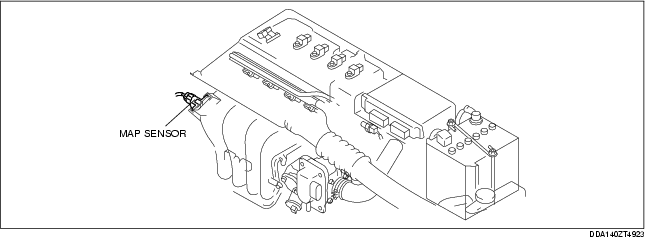
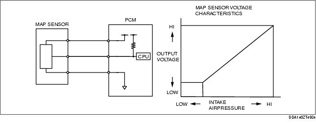

Manifold absolute pressure (MAP) sensor construction/operation [ZY] • Installed on the intake manifold.  • When pressure is applied to the piezoelectric element in the sensor, an electric potential difference occurs. Output voltage increases as the intake air pressure increases. 